Техника высоких напряжений
Конспект лекции
Лекция 3. Стример, лидер, искровой разряд
Как лавина превращается в канал и сколько длится пробой · материал для студентов
О чём лекция. В лекции 2 лавина при αx ≈ 20 становилась стримером. Теперь — что дальше: как растёт стример, почему знак острия меняет пробивное напряжение в 2–2,5 раза, зачем длинным промежуткам горячий лидер и сколько времени занимает пробой. Интерактив. «Стример, лидер, искровой разряд» на сайте курса: вкладки 1–4 повторяют разделы конспекта, вкладка 5 — реальные случаи, 6 — задачи, 7 — тест. Задачи с разбором — в пособии студента к лекции 3. |
После лекции вы сможете:
объяснить критерий перехода лавины в стример и рассчитать критическую длину лавины;
описать шаг положительного и отрицательного стримера и роль фотоионизации;
оценить пробивное напряжение острие — плоскость при обеих полярностях, с поправкой на высоту;
объяснить полярный эффект через объёмный заряд ионов;
объяснить, как появляется лидер, и рассчитать U50 по Галле;
разложить время разряда на tс и tф и прочитать вольт-секундную характеристику.
1. Обозначения и сокращения
| Обозначение | Смысл | Единица |
|---|---|---|
| E | напряжённость электрического поля | кВ/см |
| Es | поле устойчивости стримера (+: ≈ 4,7; −: ≈ 11,7 при δ = 1) | кВ/см |
| Eq | поле объёмного заряда головки лавины или стримера | кВ/см |
| EL | продольный градиент в канале лидера | кВ/см |
| Emax | наибольшая напряжённость у острия | кВ/см |
| α | коэффициент ударной ионизации | 1/см |
| xкр | критическая длина лавины (переход в стример) | см |
| U, Um | напряжение; амплитуда импульса | кВ |
| Uз | напряжение зажигания (начала ионизации у острия) | кВ |
| Uпр, U50 | пробивное напряжение; 50-процентное разрядное напряжение | кВ |
| U0 | статическое пробивное напряжение | кВ |
| d | расстояние острие (стержень) — плоскость | см, м |
| r | радиус острия | мм, см |
| L, Ls | длина лидера; длина стримерной зоны | м |
| v | скорость стримера, лидера | м/с, см/мкс |
| T | температура газа в канале | К |
| δ | относительная плотность воздуха | — |
| H | высота над уровнем моря | м |
| tс, tф, tр | статистическое время запаздывания, время формирования, время разряда | мкс |
| D | постоянная промежутка в критерии площадей | кВ·мкс |
| k | коэффициент промежутка в формуле Галле | — |
| Сокращение | Расшифровка |
|---|---|
| ВЛ, ПС, ОРУ | воздушная линия; подстанция; открытое распределительное устройство |
| КРУ | комплектное распределительное устройство |
| ОПН | ограничитель перенапряжений нелинейный |
| ПЧ | преобразователь частоты |
| КИ, ГИ | коммутационный импульс (фронт сотни мкс); грозовой импульс 1,2/50 мкс |
| УФ | ультрафиолетовое излучение |
| КЗ | короткое замыкание |
| NERC | Североамериканская корпорация по надёжности электроснабжения |
| UCTE | Союз по координации передачи электроэнергии (Европа), ныне ENTSO-E |
2. От лавины к стримеру
2.1. Критерий перехода
В лекции 2 лавина росла как n = eαx, и её положительные ионы копились у головки. Пока число электронов мало, поле их заряда Eq ничтожно по сравнению с внешним E. Но рост экспоненциальный: на пути в несколько миллиметров число электронов доходит до 108, и поле головки сравнивается с внешним полем. С этого момента лавина перестаёт быть «пробной частицей» в заданном поле: она сама меняет поле вокруг себя.
Условие перехода лавины в стример (критерий Ретера — Мика):
(1)
Из него критическая длина лавины
(2)
Пример. Воздух, 760 мм рт. ст., E = 40 кВ/см: α = 15·760·e−365·760/40000 = 11,1 1/см, xкр = 20/11,1 = 1,80 см. Если промежуток короче xкр, лавина дойдёт до анода раньше, чем станет стримером, и пробой развивается по механизму Таунсенда (с участием катода). Если длиннее — по стримерному механизму.
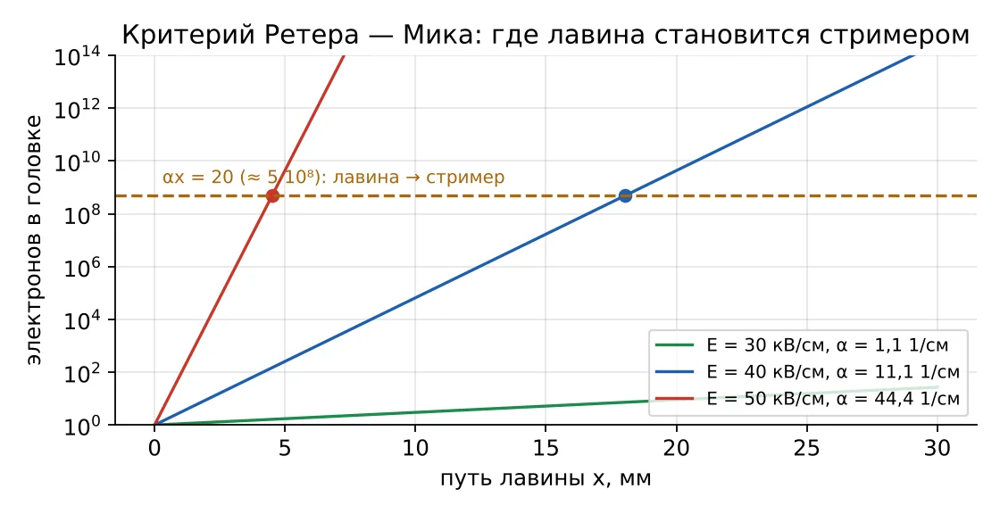
Рис. 1. Рост лавины при 30, 40 и 50 кВ/см и порог αx = 20
2.2. Почему одной теории Таунсенда мало
Теория Таунсенда (лекция 2) хорошо описывает разряд при малых p·S. Для промежутков длиной от сантиметра при атмосферном давлении опыт ей противоречит:
| Наблюдение | Ожидание по Таунсенду | Опыт |
|---|---|---|
| Время пробоя промежутка 1 см | несколько пробегов ионов до катода, ≥ 10−5 с | 10−8–10−7 с |
| Влияние материала катода (γ) | заметное | практически нет |
| Форма канала | диффузное свечение всего промежутка | тонкий извилистый ветвистый канал |
| Место начала разряда | у катода | может начаться в середине промежутка |
Объяснение даёт стримерная теория (Ретер, Лёб, Мик): разряд развивается сам, за счёт поля объёмного заряда и фотоионизации, без ожидания вторичных электронов с катода.
3. Механизм стримера
3.1. Положительный стример
Положительный стример растёт от анода к катоду, навстречу электронам. Его головка — объёмный положительный заряд ионов, оставшихся от лавины. Один «шаг» стримера состоит из трёх стадий:
Головка излучает. В сильном поле головки молекулы азота возбуждаются и излучают ультрафиолет. Фотоны ионизируют кислород впереди головки — появляются затравочные электроны (фотоионизация).
Вторичные лавины. Затравочные электроны дрейфуют к положительной головке и в её поле (120–160 кВ/см — в десятки раз больше внешнего) размножаются лавинами. За каждой лавиной остаётся хвост положительных ионов.
Новая головка. Электроны лавин входят в головку и нейтрализуют её — она становится частью канала с квазинейтральной плазмой. Хвосты ионов образуют новую положительную головку ближе к катоду.
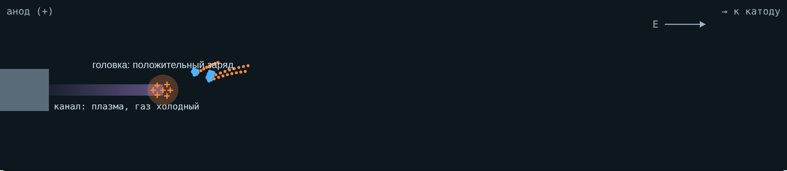
Рис. 2. Интерактив, вкладка 1: шаг положительного стримера — головка, фотоны, вторичные лавины
Цикл повторяется, и головка движется со скоростью от ≈ 105 м/с у самых тонких стримеров до ≈ 4·106 м/с при высоком напряжении — на порядки быстрее дрейфа электронов. Диаметр стримера — от 0,2 мм до нескольких миллиметров. Газ в канале почти не нагревается: это «холодная» плазма.
3.2. Отрицательный стример
Отрицательный стример растёт от катода к аноду, вместе с электронами. Его головка — избыток электронов. Электроны головки сами дрейфуют вперёд, к аноду, и размножаются лавинами, которые бегут от головки. Заряд головки при этом расплывается, её поле слабее — 100–120 кВ/см. Поэтому отрицательный стример легче затухает и требует более сильного внешнего поля.
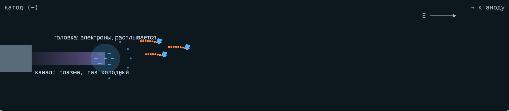
Рис. 3. Интерактив, вкладка 1: отрицательный стример — головка из электронов расплывается
3.3. Сравнение
| Положительный (+) | Отрицательный (−) | |
|---|---|---|
| Направление роста | к катоду | к аноду |
| Головка | положительные ионы, компактная | электроны, расплывается |
| Поле головки | 120–160 кВ/см | 100–120 кВ/см |
| Поле устойчивости Es при δ = 1 | ≈ 4,7 кВ/см | ≈ 11,7 кВ/см |
| Скорость | 105…4·106 м/с | на 20–25 % меньше |
| Диаметр | от 0,2 мм | толще: ≈ 1–2 мм при 40–80 кВ |
| Вид | тонкие ветвящиеся нити | короткие толстые кисти |
Числа: поля устойчивости — расчёт и сравнение с опытом в работе «On propagation of positive and negative streamers in air in uniform electric fields» (arXiv:2305.09560); скорости и диаметры — измерения Бриельса и др. (2008, arXiv:0805.1376).
4. Поле устойчивости и длина стримеров
Стример — проводник, но не идеальный: вдоль его канала есть продольное поле. Если внешнее поле меньше определённого значения, стример теряет головку и гаснет. Это значение называют полем устойчивости стримера Es. В воздухе при нормальных условиях
(3)
Отсюда простая оценка длины стримерной зоны в резко неоднородном промежутке: стримеры растут от острия, пока падение напряжения на них не «съест» приложенное напряжение:
(4)
Если Ls ≥ d, стримеры дорастают до плоскости, по каналу идёт ток, и промежуток пробивается. Оценка пробивного напряжения промежутков острие — плоскость длиной до ≈ 1 м:
(5)
Пример. d = 20 см, δ = 1: при положительном острие Uпр ≈ 4,7·20 = 94 кВ, при отрицательном ≈ 11,7·20 = 234 кВ. Эти оценки согласуются с опорными данными для постоянного напряжения в промежутке стержень — плоскость: ≈ 4,5–5 кВ/см при положительном и ≈ 10 кВ/см при отрицательном стержне.
С высотой плотность воздуха падает:
(6)
На высоте 400 м (рудники Хибин) δ = 0,952: поля устойчивости и пробивные напряжения на 5 % меньше, чем на уровне моря.
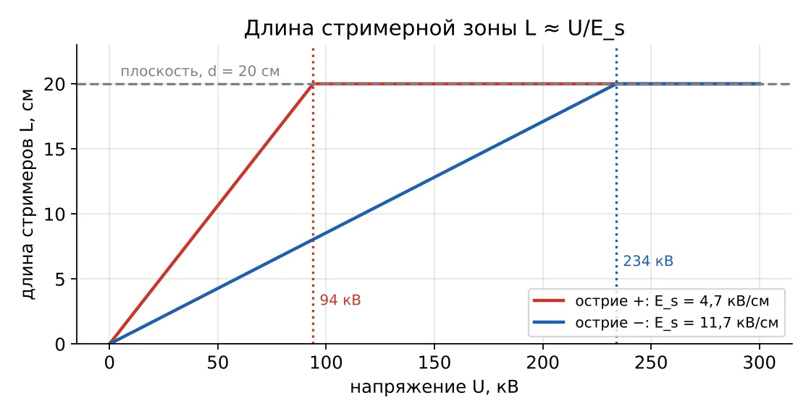
Рис. 4. Длина стримерной зоны L ≈ U/Es для положительного и отрицательного острия, d = 20 см
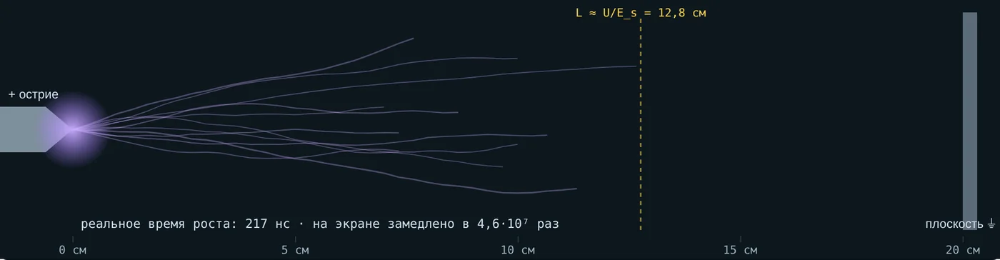
Рис. 5. Интерактив, вкладка 1: 60 кВ, 20 см, острие «+» — стримеры 12,8 см
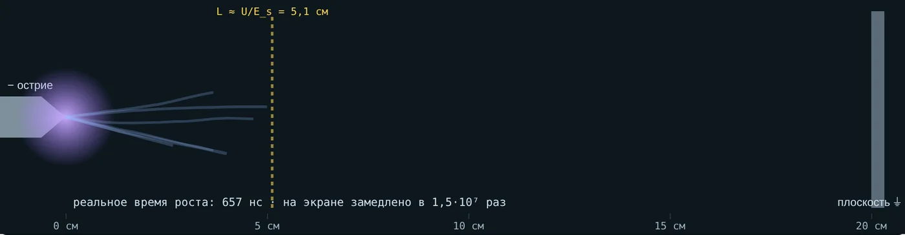
Рис. 6. То же при отрицательном острие — стримеры 5,1 см
5. Полярный эффект
5.1. Поле у острия и напряжение зажигания
Наибольшая напряжённость у острия радиусом r на расстоянии d от плоскости (лекция 1):
(7)
Ионизация у острия начинается, когда Emax достигает начальной напряжённости. В учебной модели интерактива взята формула типа Пика для малого радиуса:
(8)
где r в сантиметрах. У отрицательного острия корона начинается примерно на 10 % раньше (так принято в модели). Напряжение зажигания почти не зависит от d — его задаёт радиус острия.
5.2. Роль объёмного заряда
Электроны движутся быстро и за доли микросекунды уходят из зоны ионизации. Положительные ионы в сотни раз медленнее и остаются облаком. Это облако искажает поле — по-разному при разной полярности.
| Острие + | Острие − | |
|---|---|---|
| Куда уходят электроны | в острие | от острия, прилипают к O2 и образуют ионы O2− |
| Где облако «+» | перед острием, вытянуто в промежуток | тонким слоем у самого острия |
| Поле у острия | ослаблено | усилено |
| Поле в промежутке | усилено: облако работает как продолжение острия | ослаблено облаком O2− |
| Итог | корона позже, пробой раньше | корона раньше (импульсы Тричела), пробой позже |
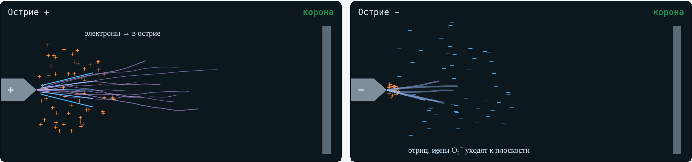
Рис. 7. Интерактив, вкладка 2: объёмный заряд у положительного и отрицательного острия
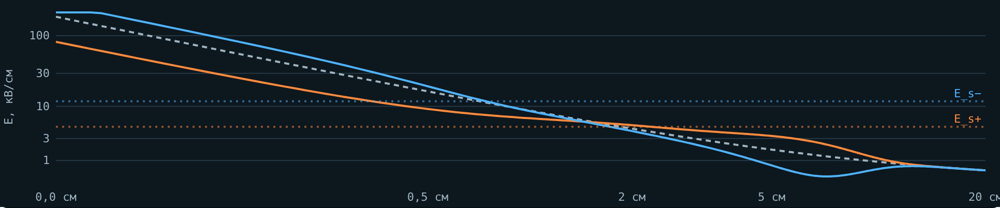
Рис. 8. Интерактив, вкладка 2: поле вдоль оси без заряда и с зарядом при обеих полярностях (качественно)
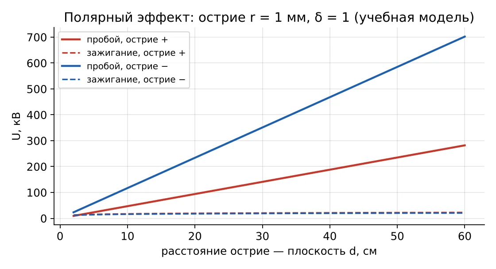
Рис. 9. Напряжения зажигания и пробоя от расстояния: r = 1 мм, δ = 1 (учебная модель)
5.3. Где это важно
При переменном напряжении резко неоднородный промежуток пробивается в тот полупериод, когда острие положительно.
Внешнюю изоляцию испытывают импульсами обеих полярностей; для воздушных промежутков опаснее положительная.
В звене постоянного тока преобразователя частоты острая кромка у шины «+» опаснее: зазоры проверяют по худшей полярности.
На отрицательной острой кромке корона начинается раньше: треск и помехи появляются при невысоком напряжении.
6. Лидер в длинных промежутках
6.1. Насыщение прочности
Если бы промежутки любой длины пробивались одними стримерами, пробивное напряжение росло бы линейно: 4,7 кВ/см · d. Опыт показывает иное. Для промежутка стержень — плоскость при положительном коммутационном импульсе с критическим фронтом используют формулу Галле:
(9)
где d — в метрах, k — коэффициент промежутка (1 для стержня над плоскостью; больше для других конфигураций). При d = 1 м U50 = 378 кВ (378 кВ/м), при 3 м — 927 кВ (309 кВ/м), при 10 м — 1889 кВ (189 кВ/м). Каждый следующий метр добавляет всё меньше: прочность насыщается. Причина — лидер.
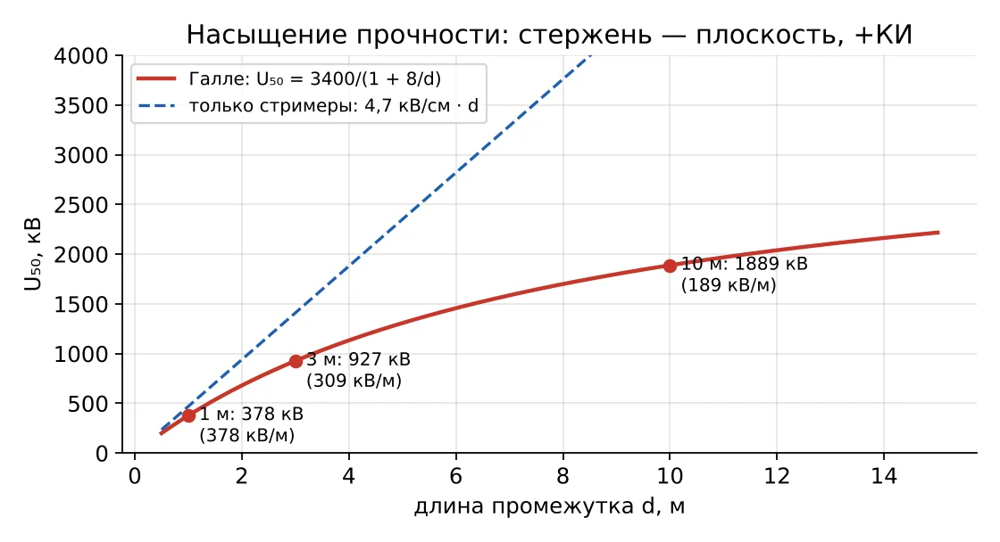
Рис. 10. Формула Галле и линейная оценка «только стримеры»
6.2. Как стебель становится лидером
Токи многих стримеров, стартующих от стержня, сходятся в общий канал — стебель. Он нагревается. В холодном воздухе свободные электроны за 10−8–10−7 с прилипают к молекулам кислорода, и канал теряет проводимость. При температуре выше ≈ 1500–2000 К электроны отрываются от отрицательных ионов O− быстрее, чем прилипают: канал остаётся проводящим и продолжает греться. Такой горячий канал называют лидером.
Интерферометрия лидера показала канал диаметром 1–2 мм с температурой газа 2000–3500 К; область выше 1500 К — около 1 мм в диаметре (CIGRE ISH2015, доклад 466).
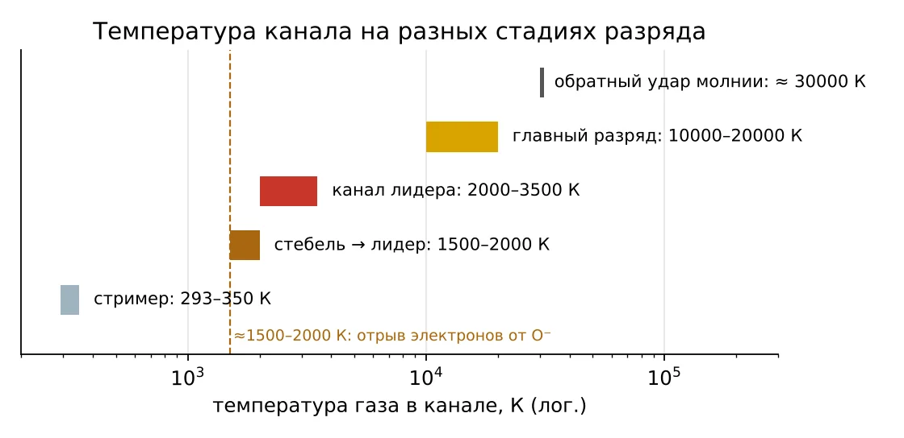
Рис. 11. Температура газа в канале на разных стадиях разряда
6.3. Структура и рост лидера
Лидер — хорошо проводящий канал, на котором теряется мало напряжения: его продольный градиент EL в несколько раз меньше, чем в стримерной зоне. Поэтому лидер переносит потенциал стержня вглубь промежутка. Перед его головкой всегда идёт стримерная зона длиной
(10)
Когда стримерная зона достигает плоскости, наступает финальный скачок:
(11)
В учебной модели интерактива: Es = 3,8 кВ/см в стримерной зоне длинного промежутка, EL = 1,5 кВ/см, скорость лидера 3 см/мкс, лидер растёт, пока потенциал его головки выше 800 кВ. Параметры подобраны так, что порог пробоя модели на 1–10 м отличается от формулы Галле не больше чем на ≈ 10 %.
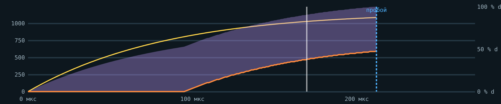
Рис. 12. Интерактив, вкладка 3: напряжение, длина лидера и стримерной зоны во времени, d = 4 м
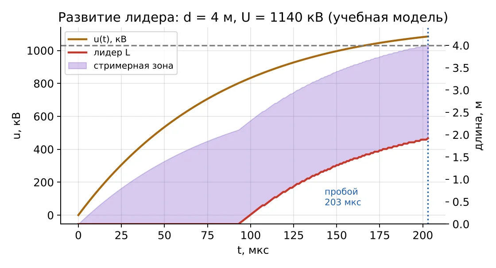
Рис. 13. Развитие лидера в промежутке 4 м при U = 1140 кВ (учебная модель): пробой на 203 мкс
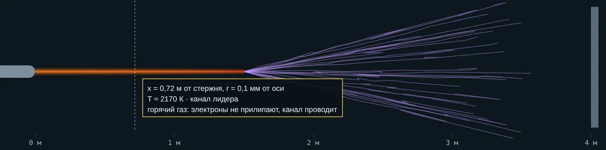
Рис. 14. Интерактив, вкладка 3: курсор на канале лидера — ≈ 2170 К
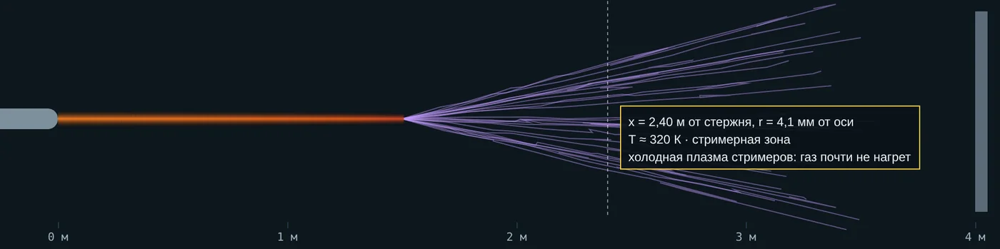
Рис. 15. Курсор в стримерной зоне — ≈ 320 К: газ почти не нагрет
Скорость положительного лидера в лабораторных промежутках — порядка 104 м/с (1–3 см/мкс), на два порядка меньше скорости стримера. В опыте с промежутком 1 м при импульсе 404 кВ лидер удлинялся не медленнее 1,3·104 м/с (arXiv:1806.02788).
6.4. Главный разряд — искра
После финального скачка по каналу идёт главный разряд: ток нарастает до сотен ампер и больше, газ нагревается до 104 К и выше, ионизуется термически — канал проводит почти как металл. Давление в канале резко растёт и порождает ударную волну: в лаборатории это щелчок, у молнии — гром. При мощном источнике искра переходит в дугу.
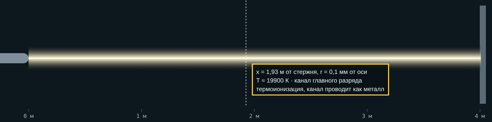
Рис. 16. Интерактив, вкладка 3: канал главного разряда, ≈ 20 000 К (оценка модели)
6.5. Лидер молнии
Нисходящий отрицательный лидер молнии растёт не плавно, а ступенями: перед головкой образуется отдельный светящийся участок — пространственный стебель; он растёт в обе стороны и соединяется с каналом. Ступени — десятки метров, паузы 20–50 мкс, средняя скорость ≈ 2·105 м/с, ток каждой ступени не меньше 1 кА. После касания земли обратный удар раскаляет канал до ≈ 30 000 К при давлении 10 атм и больше (Раков, Уман).
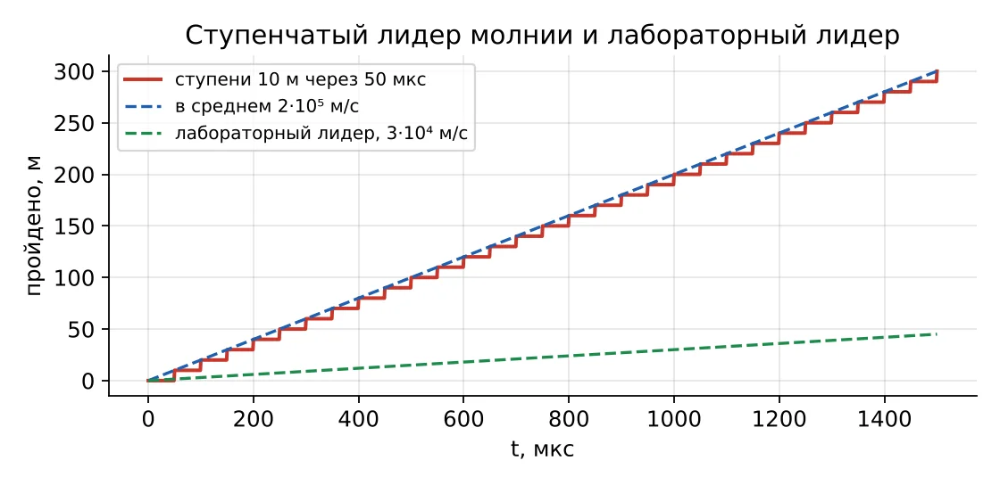
Рис. 17. Ступенчатый лидер молнии и лабораторный лидер
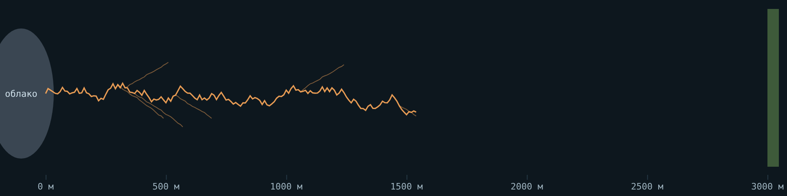
Рис. 18. Интерактив, вкладка 3, режим «молния»: лидер на полпути к земле
| Лабораторный лидер (+) | Лидер молнии (−) | |
|---|---|---|
| Рост | почти непрерывный | ступенями |
| Скорость | ≈ 104 м/с | ≈ 2·105 м/с в среднем |
| Масштаб | метры | километры |
| После касания | главный разряд | обратный удар, ≈ 30 000 К |
6.6. Какой импульс опаснее
На грозовом импульсе (1,2/50 мкс) лидер не успевает пройти длинный промежуток: при 3 см/мкс за 50 мкс он пройдёт лишь 1,5 м, поэтому нужно большее напряжение. На коммутационном импульсе с фронтом в сотни микросекунд лидер успевает дойти до плоскости на фронте — пробивное напряжение минимально. При ещё более длинном фронте объёмный заряд стримеров успевает экранировать стержень, и прочность снова растёт. Отсюда U-образная зависимость U50 от длительности фронта и понятие критического фронта (МЭК 60071-2). Поэтому изоляцию линий сверхвысокого напряжения выбирают по коммутационным перенапряжениям.
7. Время разряда
7.1. Составляющие
Пробой не наступает в тот момент, когда напряжение превысило статическое пробивное U0. Нужно время на две вещи:
(12)
Статистическое время запаздывания tс — ожидание «эффективного» электрона в месте, где с него начнётся лавина. Оно случайно. Если электроны появляются со средней частотой 1/t̄с, вероятность того, что эффективный электрон ещё не появился за время t,
(13)
Среднее t̄с уменьшают облучением промежутка ультрафиолетом или радиоактивным препаратом. В резко неоднородном поле корона сама даёт электроны, поэтому tс мало.
Время формирования tф — от первой лавины до замыкания канала: стримеры, лидер, финальный скачок. Чем выше перенапряжение над U0, тем оно меньше.
7.2. Критерий площадей
Инженерная модель (критерий равных площадей Кинда): пробой наступает, когда площадь между кривой напряжения и уровнем U0 достигла постоянной промежутка D:
(14)
Для прямоугольного импульса напряжения U получаем
(15)
Малое D — однородное поле (шаровой промежуток), большое — резко неоднородное (стержень). В интерактиве: шаровой промежуток D = 2 кВ·мкс, стержень — плоскость D = 60 кВ·мкс, U0 = 100 кВ. Грозовой импульс 1,2/50 мкс задан формулой
(16)
Обозначение 1,2/50 мкс читают так. «1,2» — условная длительность фронта T1: её находят по моментам, когда напряжение достигает 30 % и 90 % амплитуды:
(17)
Сам максимум наступает позже, около 2,1 мкс. «50» — время T2, за которое напряжение спадает до половины амплитуды. В интерактиве это видно на верхнем графике «Весь импульс» с отметками 100 %, 50 % и 50 мкс.
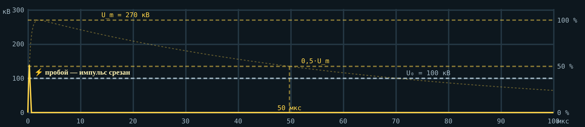
Рис. 19. Интерактив, вкладка 4: весь импульс 270 кВ, шаровой промежуток — импульс срезан пробоем на ≈ 0,3 мкс
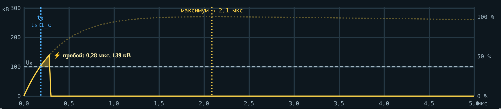
Рис. 20. То же, начало импульса 0–5 мкс крупно: пробой при ≈ 50 % амплитуды, ещё на фронте
Если амплитуда велика, площадь D набирается быстро и пробой происходит на фронте, при напряжении заметно ниже амплитуды: импульс «срезан». Чем ниже амплитуда, тем позже пробой; при амплитуде ниже порога площадь не набирается, и импульс проходит целиком.
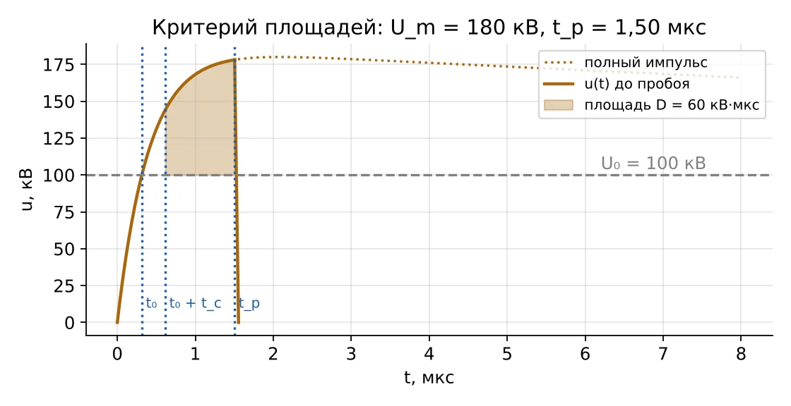
Рис. 21. Критерий площадей: Um = 180 кВ, стержень, tс = 0,3 мкс

Рис. 22. Интерактив: тот же случай — стержень, 180 кВ, начало импульса крупно
7.3. Вольт-секундная характеристика
Подавая импульсы разной амплитуды и отмечая для каждого напряжение пробоя и время до него, получают вольт-секундную характеристику. При пробое на фронте берут напряжение в момент пробоя, на хвосте — амплитуду. Для однородного поля она пологая, для резко неоднородного — крутая. Отношение наименьшей амплитуды, пробивающей промежуток, к U0 — импульсный коэффициент: у шаров ≈ 1,02, у стержня больше.
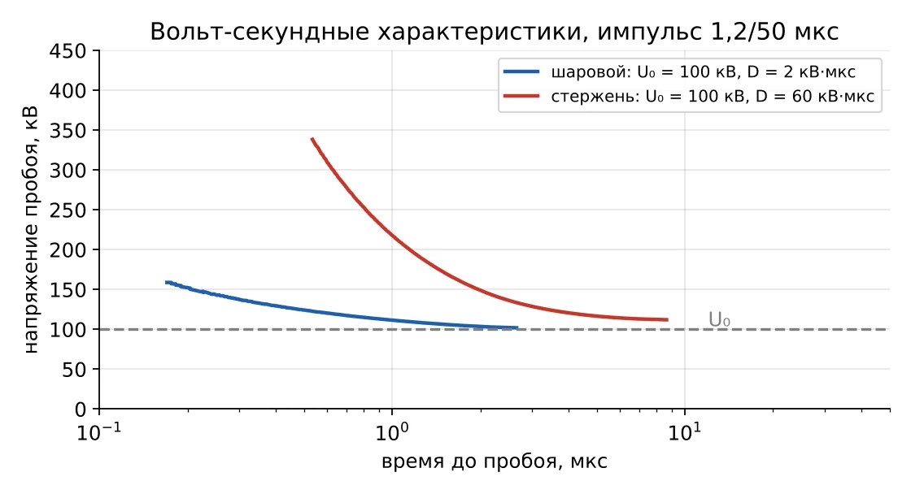
Рис. 23. Вольт-секундные характеристики шарового и стержневого промежутков (учебная модель)
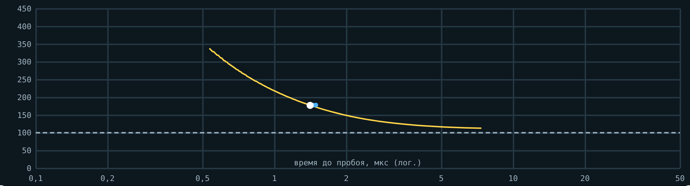
Рис. 24. Интерактив, вкладка 4: 30 импульсов по 180 кВ на стержневой промежуток — точки опытов и средняя характеристика
7.4. Координация
Защитный аппарат должен пробиваться раньше защищаемой изоляции при любой форме волны, то есть его вольт-секундная характеристика должна лежать ниже характеристики изоляции на всём диапазоне времён. У стержневого промежутка характеристика крутая: при крутых фронтах она пересекает пологую характеристику изоляции, и изоляция пробивается первой. Поэтому оборудование защищают ограничителями перенапряжений (лекция 17).
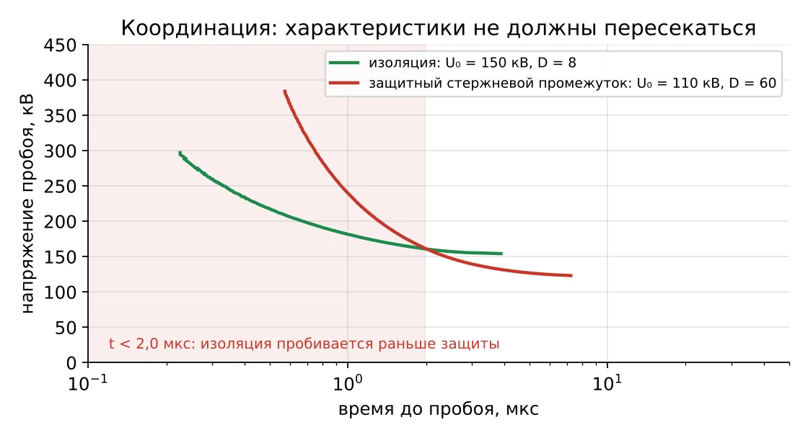
Рис. 25. Пересечение характеристик изоляции (U0 = 150 кВ, D = 8) и стержневого промежутка (U0 = 110 кВ, D = 60)
8. Реальные случаи
Случаи 1–5 описаны в открытых источниках, случай 6 — типовая учебная ситуация. Все они есть во вкладке 5 интерактива с вопросом и разбором.
8.1. Италия, 28 сентября 2003: дуга на дерево
| Что случилось | Около 03:00 линия 400 кВ Mettlen–Lavorgo (Лукманьер), по которой энергия шла из Швейцарии в Италию, отключилась: в пролёте возникла дуга на дерево. Нагрузка перешла на соседние линии, через ≈ 20 минут они тоже отключились, Италия отделилась от энергосистемы Европы. Без света остались около 56 млн человек, на полуострове — до 12 часов. |
|---|---|
| Физика | Дерево — заземлённый электрод с острыми ветками. Когда зазор сократился, напряжения линии хватило на стримеры и лидер; после замыкания ток КЗ поддержал дугу. |
| Урок | Минимальный зазор до растительности — расчётная величина, его считают по формулам пробоя длинных промежутков (Галле). |
| Источник | Википедия, «2003 Italy blackout»; итоговый отчёт UCTE, апрель 2004 |
8.2. США и Канада, 14 августа 2003: деревья под линиями 345 кВ
| Что случилось | В 14:02 отключилась линия Stuart–Atlanta: деревья высотой 9–11 м под проводом на высоте ≈ 12 м. По той же причине отключились Star–South Canton (14:27, окончательно 15:42), Harding–Chamberlin (15:05), Hanna–Juniper (15:32) — при нагрузке в пределах нормального режима. Каскад оставил без света около 50 млн человек. |
|---|---|
| Физика | Промежуток «провод — ветка» резко неоднородный: ветка — острие. Расследование: «прямая причина — разросшиеся деревья», провисание лишь немного помогло. На деревьях — следы тока КЗ. |
| Урок | После аварии введён стандарт NERC FAC-003 с минимальным расстоянием до растительности. |
| Источник | NERC, отчёт о деревьях в аварии 14 августа 2003 |
8.3. Сколько нужно до дерева: формула Галле в стандарте
| Что случилось | Для линии 345 кВ (наибольшее 362 кВ, кратность коммутационных перенапряжений 2,0) NERC получил минимальный зазор 3,53 фута (≈ 1,08 м) на высоте 3000 футов, а повторный расчёт PNNL по Галле с теми же допущениями — 6,1 фута (≈ 1,86 м). |
|---|---|
| Физика | Длинный воздушный промежуток пробивается через лидер; расчётный случай — положительный коммутационный импульс с критическим фронтом. |
| Урок | Инженерная формула даёт ответ, сильно зависящий от допущений: коэффициента промежутка, высоты, кратности перенапряжений. |
| Источник | PNNL-21220, 2012 |
8.4. Лидер в промежутке 1 м: ударная волна
| Что случилось | Промежуток стержень — плоскость 1 м, положительный импульс 404 кВ с фронтом 250 мкс. Интерферометр Маха — Цендера: лидер удлинялся не медленнее 1,3·104 м/с, от канала расходилась ударная волна со скоростью ≈ 319 м/с. |
|---|---|
| Физика | Газ в канале лидера быстро нагревается до тысяч кельвинов, давление растёт — возникает ударная волна, как гром у молнии. |
| Урок | Лидер — горячий канал, и это видно напрямую. |
| Источник | «Shock Wave in Leader Discharge Observed Using Mach-Zehnder Interferometry», arXiv:1806.02788 |
8.5. Ступенчатый лидер молнии
| Что случилось | Высокоскоростная съёмка: ступени по десятки метров, паузы 20–50 мкс, средняя скорость ≈ 2·105 м/с, ток ступени ≥ 1 кА. Обратный удар раскаляет канал до ≈ 30 000 К при давлении ≥ 10 атм. |
|---|---|
| Физика | Отрицательный лидер растёт скачками через пространственный стебель; положительный лабораторный — почти непрерывно. |
| Урок | Молния — тот же лидерный механизм в километровом масштабе. |
| Источник | Rakov V. A., Uman M. A. Lightning: Physics and Effects, разд. 4.7–4.12 |
8.6. Защитный промежуток не успел (типовая ситуация)
| Что случилось | Трансформатор 10 кВ подстанции рудника защищён стержневым искровым промежутком с пробивным напряжением ниже испытательного напряжения трансформатора. Волна с очень крутым фронтом пробила изоляцию трансформатора раньше, чем сработал промежуток. |
|---|---|
| Физика | У стержневого промежутка крутая вольт-секундная характеристика: на коротких временах он требует напряжения выше, чем выдерживает изоляция. |
| Урок | Оборудование защищают ОПН с пологой характеристикой. |
| Источник | Типовая учебная ситуация, принцип координации по МЭК 60071 |
9. Вопросы для самопроверки
Что даёт стримеру затравочные электроны впереди головки?
Почему отрицательному стримеру нужно большее поле, чем положительному?
Почему корона раньше загорается у отрицательного острия, а пробой раньше наступает у положительного?
Как оценить пробивное напряжение промежутка острие — плоскость длиной 30 см на высоте 400 м?
Что показывает формула Галле и почему прочность длинных промежутков насыщается?
При какой температуре стебель стримеров становится лидером и почему?
Что такое финальный скачок?
Чем ступенчатый лидер молнии отличается от лабораторного?
Почему длинным промежуткам опаснее положительный коммутационный импульс?
Из чего складывается время разряда и как на него влияет облучение?
Почему стержневой искровой промежуток плохо защищает от волн с крутым фронтом?
10. Источники
Важов В. Ф., Лавринович В. А. Техника высоких напряжений: учебник. — Томск: ТПУ, 2014. — Разд. 1.1–1.2.
Райзер Ю. П. Физика газового разряда. — М.: Наука.
Базелян Э. М., Райзер Ю. П. Искровой разряд. — М.: МФТИ, 1997.
On propagation of positive and negative streamers in air in uniform electric fields. — arXiv:2305.09560.
Briels T. M. P. et al. Positive and negative streamers in ambient air: measuring diameter, velocity and dissipated energy. — arXiv:0805.1376, 2008.
Gallet G., Leroy G., Lacey R., Kromer I. General expression for positive switching impulse strength valid up to extra long air gaps. — IEEE Trans. PAS, 1975.
Applicability of the Gallet Equation to the Vegetation Clearances of NERC Reliability Standard FAC-003-2. — PNNL-21220, 2012.
Time-resolved measurements on thermal parameters of leader discharges using a Mach-Zehnder interferometer. — CIGRE ISH2015, доклад 466.
Shock Wave in Leader Discharge Observed Using Mach-Zehnder Interferometry. — arXiv:1806.02788.
Rakov V. A., Uman M. A. Lightning: Physics and Effects. — Cambridge University Press, 2003. — Разд. 4.
NERC. Final report on the August 14, 2003 blackout: vegetation (trees) investigation.
2003 Italy blackout. — Wikipedia; UCTE. Final Report of the Investigation Committee on the 28 September 2003 Blackout in Italy, 2004.
МЭК 60071-2. Координация изоляции. Часть 2. Руководство по применению.